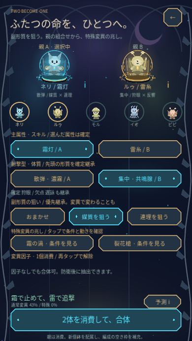
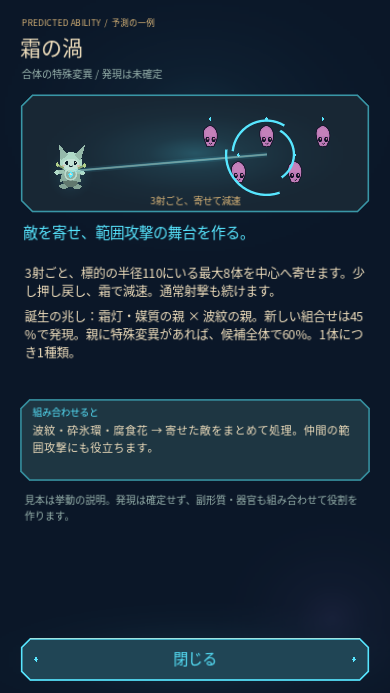
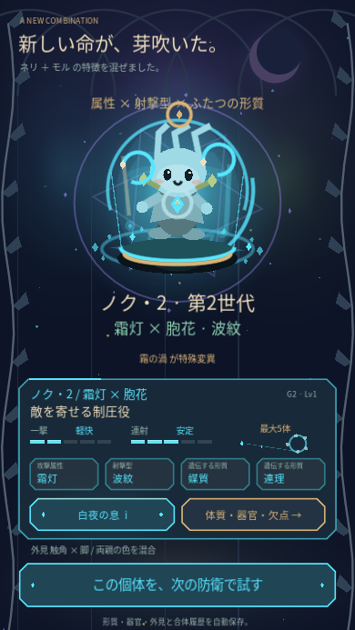
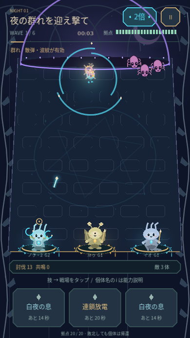
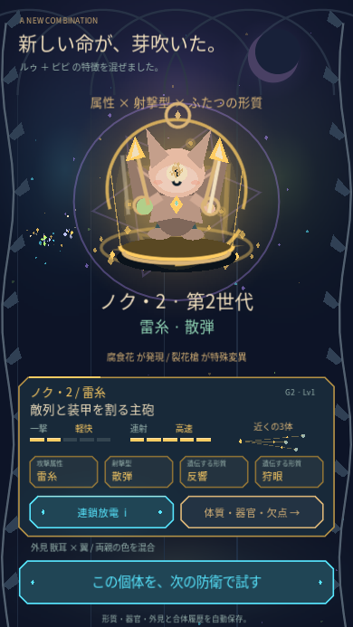
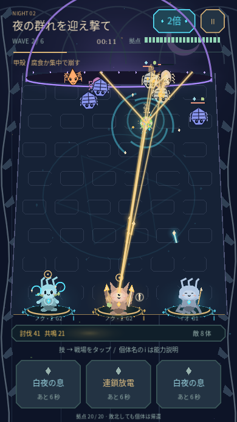

GODOT 4 · PLAYABLE PROTOTYPE
VESPER GARDEN
宵庭の錬成室
親の特徴を掛け合わせ、新しい個体を防衛で試すゲーム。副形質を狙って合体し、集敵する「霜の渦」や敵列を割る「裂花槍」を発見。戦闘は1倍／2倍を切り替え、育った個体と変異因子を次の合体へつなぎます。
Android APKをダウンロード0.5.0 · 約57 MB · Android 7以降縦画面・タップ操作。OpenGL ES 3.0対応端末向け。Godotのインストール、登録、通信は不要です。
スマホに入れる
- 上のボタンをChromeなどのブラウザで開き、APKを保存します。
- ダウンロードが完了したら、通知またはファイルアプリからAPKを開きます。求められた場合、そのアプリに「不明なアプリのインストール」を許可します。
- 「Vesper Garden」をインストールして起動します。
リンクがアプリ内ブラウザで開けない場合は、「ブラウザで開く」からChromeへ切り替えてください。APKはインストール用ファイルで、ブラウザ内でゲームを実行する形式ではありません。
最初の一周
- 能力の札や個体名の i をタップ。効果・相性・弱点をひとつずつ確認できます。戦闘中の説明は時間停止。
- 下段の個体を選び、上段の台座に配属して3体を編成。
- 「防衛で性能を試す」。右上で1倍／2倍を切替。通常攻撃は自動。スキルをタップすると時間が止まり、戦場の好きな位置に発動できます。
- 2・4ウェーブ突破で、ランダムな3択強化から1つを選びます。6ウェーブ、約1〜2分の防衛。2倍なら約半分です。
- 戦闘後は獲得強化を1つだけ変異因子として抽出。親2体・主属性・射撃型・副形質の狙いを選んで合体し、因子を新個体に定着させて再出撃。












今回の改修
副形質を「おまかせ」または候補から指定。狙いを優先しつつ、変異する余地も残します。特殊変異の兆しをタップして条件と動く見本を確認。初期個体ではネリ＋モルで「霜の渦」、ルゥ＋ピピで「裂花槍」が候補になります。発現は確率制です。
霜の渦は3射ごとに敵を寄せて範囲攻撃を助け、裂花槍は枝分かれする追撃で装甲を割ります。特殊変異は次の合体にも継承可能。2倍中もスキルの照準・3択・能力説明・休止では時間が止まります。
確認できていること
PC上のGodotで、379項目が合格。実タッチで合体→2倍の全6波→成長・抽出→次の合体→再防衛を確認し、1倍と2倍の戦闘結果・成長の一致も検証しました。APKのビルド・署名・配布ファイルを検証。Android実機の起動と倍速時の性能は未確認です。
試作用の開発署名APKです。前版と同じ署名で上書き更新でき、個体・成長・編成・因子を引き継げます。進行は端末内に自動保存。引き継ぐ場合はアンインストールせず更新してください。